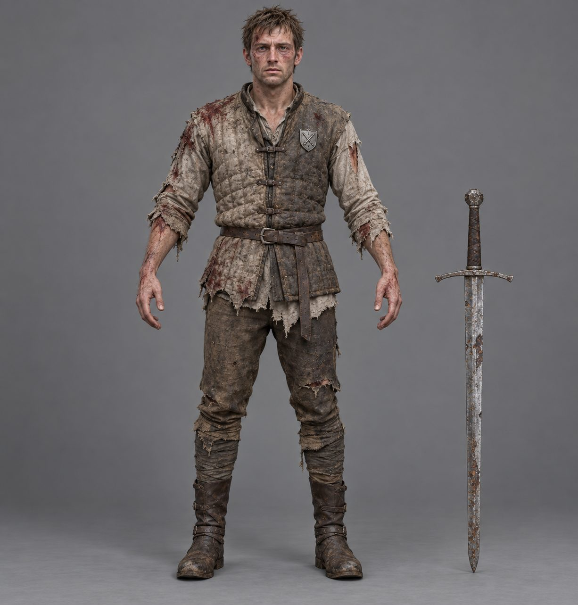
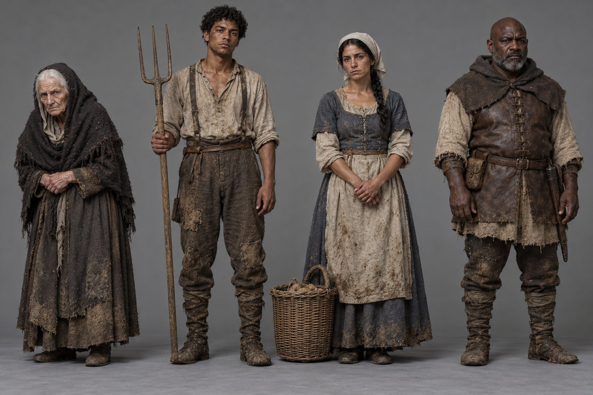
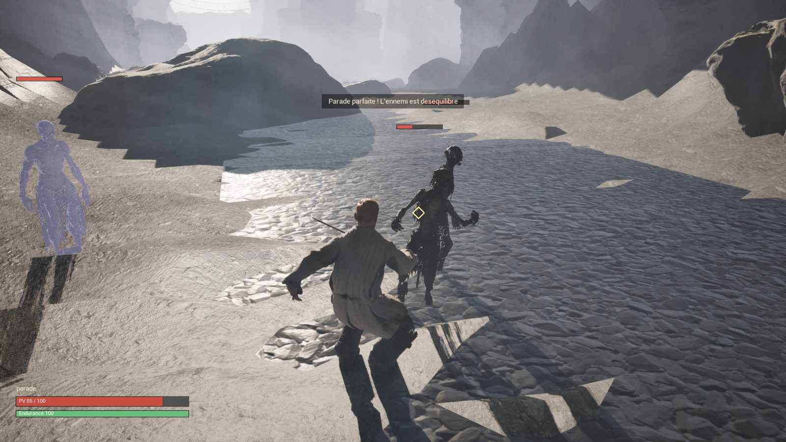

Pitch du jeu
Le jeu en cinq minutes environ : l'histoire, le monde, ce que fait le joueur, ce qui le rend différent et où en est le prototype. Sous chaque paragraphe, une petite note donne ses sources : les documents de design et les décisions du directeur (D-xx).
Titre de travail provisoire : « Le Crépuscule de l'Ombre ». Le directeur choisira le titre plus tard.
Sources : GDD, « Concept principal » ; bilan de la Mission 5.

Le jeu en une phrase
Un capitaine trahi et sacrifié se réveille sans mémoire, fusionné de force avec un Ange Déchu qui le ressuscite, le raille et le corrompt ; il mène sa vengeance dans un monde ouvert qui se souvient de chacun de ses actes.
- Genre
- Action-RPG en monde ouvert, avec de l'infiltration.
- Ton
- Dark fantasy mature, sombre et psychologique, centrée sur la folie de l'hôte, avec l'humour d'un Ange qui, dès le réveil, critique sans cesse le héros.
- Pour qui
- Les joueurs de grands RPG (Elden Ring, The Witcher 3, Baldur's Gate 3) et de simulations immersives (Dishonored, MGS V).
- Sur quoi
- PC d'abord, à la manette comme au clavier-souris ; consoles envisagées ensuite.
- Avec qui
- Seul, ou de 2 à 4 joueurs en coopération.
Sources : Pitch § 1 et § 2 ; GDD, « Vision du jeu » et « Concept principal » ; D‑80, D‑107. Phrase reprise de la présentation aux investisseurs (T-0086).
Le héros et son histoire de départ
La trahison. Le héros était capitaine, officier d'élite de l'Ordre du Sceptre d'Or. Son Général l'a vendu au Culte du Premier Sang, qui l'a sacrifié dans un rituel pour le fusionner avec Malak-Gath, « le Fléau du Silence » : un Ange Déchu, ancien Gardien du Vide révolté, scellé par les premiers mages, réveillé par des érudits bannis, qui se fait passer pour un Dieu auprès du Culte. Le rituel a « réussi à moitié » : le héros en sort amnésique, mais libre.
Sources : Pitch § 2 ; GDD, « Synopsis » et « Personnages principaux » ; D‑02, D‑58, D‑155.
Le réveil. Il se réveille au fond des Gorges des Soupirs, parmi des ruines et des cadavres de monstres. Dans un reflet d'eau, le joueur choisit une fois pour toutes son visage, son corps (homme ou femme) et le seul mot qui lui revient : son nom. Les soldats de l'Ordre ne reconnaissent pas ce nouveau visage.
Sources : GDD, « Le didacticiel » ; D‑01, D‑03, D‑155, D‑163.
L'éveil. Face à une horde impossible à battre, l'Ange surgit, entrevu en éclairs, et lui donne un pouvoir volontairement démesuré : sa première magie. Le héros escalade ensuite la falaise et découvre la Plaine Royale, où une patrouille de l'Ordre tire sur un possédé.
Sources : GDD, « Le didacticiel » ; D‑01, D‑03, D‑12, D‑59, D‑98.


Les premiers pas. Près du Hameau de la Brume, il apprend à maîtriser ce pouvoir à l'abri des regards. Au Pont des Déserteurs, il tue ou empoisonne en secret d'anciens soldats de l'Ordre ; l'insigne de leur chef, celui de sa propre unité, lui rend un premier souvenir. À Oakhaven, son Général le croise sans le reconnaître.
Sources : GDD, « La zone de départ » et « Les quêtes principales » (QP1) ; D‑03, D‑04, D‑14, D‑35, D‑38, D‑98, D‑108.
La traque. Le Général sait que le héros a survécu et fait traquer « l'hôte ». Le Culte se déchire : les Purificateurs veulent extraire l'Ange, les Éveillés voient dans le héros l'Élu. Le trône est vide : le Général gouverne en secret, au nom d'un roi mort ou disparu. Sept quêtes principales, sans enchaînement imposé, mènent jusqu'à lui : une enquête où il garde toujours une étape d'avance.
Sources : Pitch § 2 ; GDD, « Synopsis », « Les quêtes principales », « Personnages principaux » ; D‑02, D‑03, D‑54, D‑91, D‑96, D‑109, D‑147.
Trois fins. La Rédemption du Soldat (le Général épargné et jugé, l'Ange scellé), le Pacte d'Ombre (le héros prend le trône) ou l'Avatar du Néant (l'Ange s'incarne et détruit la Capitale). Si la corruption dépasse, lors de la dernière quête, un seuil encore à chiffrer, c'est la troisième ; sinon, le joueur choisit librement entre les deux autres.
Sources : Pitch § 4 ; GDD, « Les trois fins » ; D‑28, D‑54, D‑61, D‑89.
Le monde
Le Royaume est un monde ouvert de 100 km d'un bord à l'autre :
- au sud, la Plaine Royale : la zone de départ, fermée jusqu'au Pont des Déserteurs, sa seule sortie, puis Oakhaven, seule porte officielle vers la Capitale ;
- à l'est, la Forêt Sauvage, verticale et brumeuse ; à l'ouest, les Canyons de la Brume, labyrinthe de pierre rouge ; au nord, les Pics Célestes, montagnes enneigées et îles flottantes ;
- au centre, la Capitale Éternelle, plus de 10 000 habitants.
Passé le pont, le joueur va où il veut. Des extensions sont prévues au-delà du fleuve infranchissable du Sud.
Sources : GDD, « Thème & univers » ; Pitch § 4 ; D‑06, D‑08, D‑36, D‑52, D‑93, D‑94, D‑95, D‑97, D‑132, D‑134.
Huit factions, dont cinq majeures : l'Ordre du Sceptre d'Or (la loi et le contrôle), le Conclave du Voile (la magie sans limite morale), la Coalition des Marches (la liberté locale), le Culte du Premier Sang (le sang et la nécromancie) et le Cartel de la Brume (le marché noir). Chacune a sa réputation, ses rivales, et peut s'effondrer à cause du joueur.
Sources : GDD, « Les 8 factions » et « Factions et réputation ».
Ce que fait le joueur
La boucle de jeu, « déduite, à valider » selon le GDD : se reposer, explorer une carte fausse tant qu'on n'est pas allé voir, agir (quêtes, primes, métiers, infiltration), encaisser les conséquences, progresser (au plus 8 branches de compétences sur 10 par partie), et recommencer. Les métiers (minage, chasse, forge, alchimie et cuisine) montent par la pratique.
Sources : GDD, « Boucle de jeu », « Exploration », « Métiers » et « La rejouabilité » ; Pitch § 3.D et § 4.
Le combat. On bascule à tout moment entre la vue derrière le personnage (épée, esquive, parade) et la vue par ses yeux (arc, sorts de précision, points faibles). L'épée recharge la magie, la magie déséquilibre l'ennemi, et les ennemis apprennent vos habitudes : il faut varier. Pas de classe figée.
Sources : Pitch § 2 ; GDD, « Combat hybride TPS/FPS » et « Boucle de combat ».
La magie vient de l'Ange : Feu, Glace, Foudre et Vide, plus la magie de Sang du Culte, payée en points de vie, choisis sur une roue. Vingt fusions secrètes se découvrent en expérimentant (du feu sur une cible gelée : « Choc Thermique »). Le premier élément est un don de l'Ange : le joueur le choisit en dialoguant avec lui.
Sources : Pitch § 3.D ; GDD, « Magie de l'Ange et fusions » ; D‑182.
La corruption. Chaque sort de l'Ange, chaque pacte, chaque mort fait monter la Synchronicité, sa fusion avec le héros, en trois stades : une voix, des visions, puis l'Ange lui-même, visible du seul joueur (les gens ont alors peur du héros). Elle suit vos actes, pas l'histoire, et peut redescendre : à vous de résister.
Idée à l'étude : un cinquième élément « sacré » qui ferait baisser la corruption.
Sources : GDD, « Corruption (Jauge de Synchronicité) » ; D‑10, D‑13, D‑29, D‑99, D‑182 (idée à étudier, rien de tranché).
La mort n'est pas une fin de partie : l'Ange recoud le héros au dernier point de repos. Mais le temps a passé, les quêtes secondaires en cours ont échoué, et le corps vieillit (de 30 à 50 puis 70 ans d'apparence, jusqu'à 5 cicatrices). Au bout, la mort est définitive : un héritier, formé par le joueur, reprend la partie dans un monde qui se souvient.
Sources : Pitch § 3.C ; GDD, « Mort, repos et vieillissement » ; D‑101.
La mémoire des PNJ. Les PNJ (personnages non joueurs) partagent ce qu'ils savent : user de sa magie devant les habitants d'un hameau rend tout le hameau hostile ; les quartiers de la Capitale s'espionnent entre eux ; les monstres d'une région s'adaptent à votre style. Ils apprennent aussi votre nom : d'abord « Capitaine » ou « étranger », puis, au fil des rencontres, le nom choisi. Le héros répond : « Non, moi c'est [Nom du héros]. » Faire dire ce nom aux voix reste un objectif (une première méthode est écartée) ; en attendant, il s'affiche à l'écrit. Enfin, des décrets signés au Château transforment les régions et créent des quêtes.
Sources : Pitch § 3.A ; GDD, « IA des PNJ et des ennemis », « Quêtes secondaires et Quêtes ++ » ; D‑38, D‑78, D‑155, D‑170, D‑172, D‑174, D‑176.

Ce qui le distingue
Les quatre piliers du Pitch : un monde qui se souvient, un Ange qui ronge, l'apprentissage par la pratique, tous trois vus plus haut, et la coopération.
Sources : Pitch § 3.A à 3.D.
La coopération. De 2 à 4 joueurs, capitaines de la même unité sacrifiée, ont chacun leur fragment de l'Ange, que lui seul voit et entend, leur réputation, leur prime, leur journal. Les PNJ mettent en garde un joueur contre un autre, des contrats de traque peuvent viser un coéquipier, et chacun vit sa propre fin. En solo, ces capitaines n'existent pas.
Sources : Pitch § 3.B ; GDD, « Coopération » ; D‑09, D‑30, D‑33, D‑90.
Le prototype en cours
Le moteur : Unreal Engine 5.8, choisi définitivement par le directeur pour la qualité de son rendu, après l'avoir comparé à Unity sur un même morceau de jeu.
Sources : CLAUDE.md du projet ; D‑159, D‑169, D‑181.
Déjà jouable : une portion des Gorges des Soupirs, le héros et un combat contre deux morts-vivants et un esprit.
Sources : CLAUDE.md du projet, « État du projet » ; D‑159, D‑168 ; présentation aux investisseurs (T-0086).

En préparation : un vrai morceau du jeu, en solo, pour des investisseurs : prologue court, didacticiel, zone de départ, première quête principale à Oakhaven, une quête annexe, une quête de métier et toute l'interface ; la coopération sera montrée à part. Magie réduite : un seul élément, Feu ou Glace.
Sources : D‑175, D‑177, D‑182.
La fabrication. Il est fabriqué par une équipe d'agents IA organisée comme un studio, avec un vérificateur qui relit tout. Les personnages humains passent par l'outil MetaHuman d'Unreal, chacun différent ; créatures et vêtements sont dessinés par IA puis convertis en 3D.
Sources : .equipe/README.md ; présentation aux investisseurs (T-0086) ; D‑164, D‑165, D‑179.
Pas encore décidé
Restent ouverts, entre autres : le titre, la voix qui dit le nom, les seuils de la corruption, les règles de la coopération et la façon de former l'héritier. La page « Points de design bloquants » en liste d'autres, avec leurs options.
Sources : GDD, « Concept principal », « Coopération », « Noms et chiffres à définir » ; D‑101, D‑170, D‑176, D‑182 ; dossier des points bloquants (T-0085).
Sources de cette page
« Pitch » : Pitch & Business - Synopsis Commercial 1-Page ; « GDD » : Game Design Document. « D-xx » : décisions du directeur, tenues dans un registre ; une décision l'emporte sur un document plus ancien. Même fond que la présentation aux investisseurs (T-0086), sans argent ni calendrier. Les autres pages du projet sont des propositions, à valider par le directeur (D‑180). Texte complet, liste des images et points signalés :
D:\aaa-game\.equipe\prototype\pitch.md